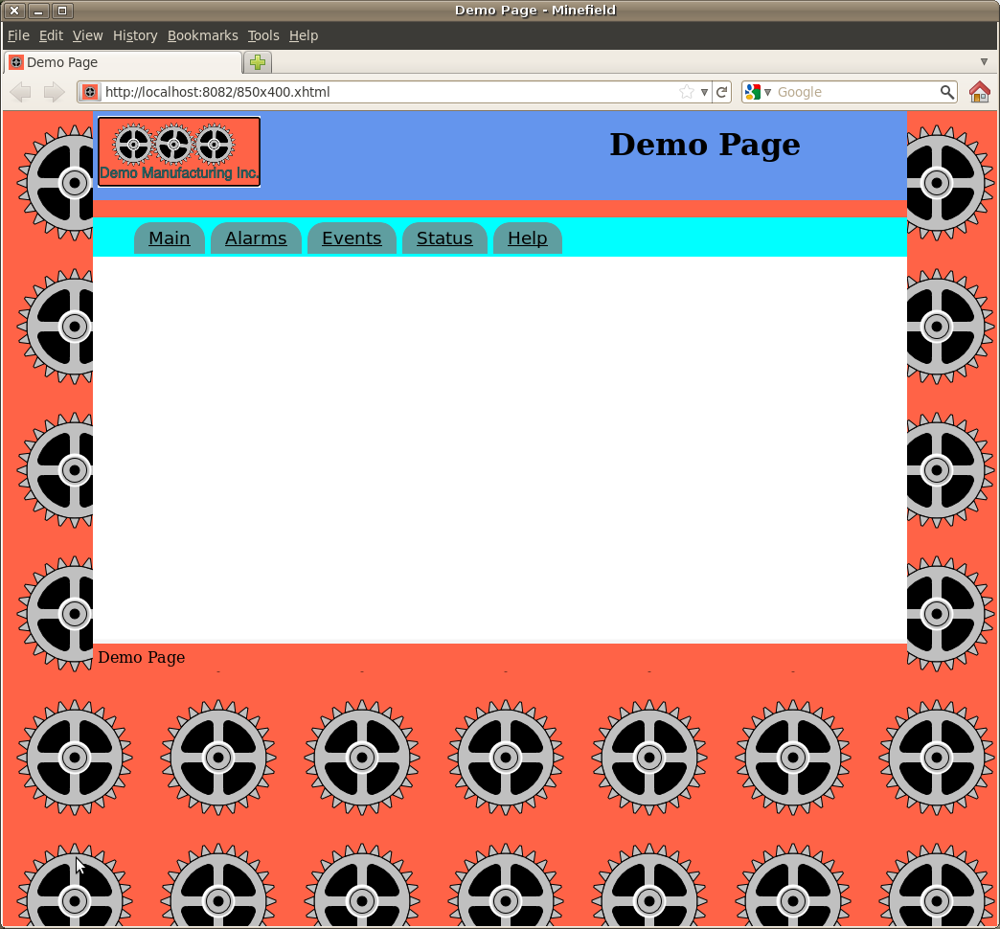
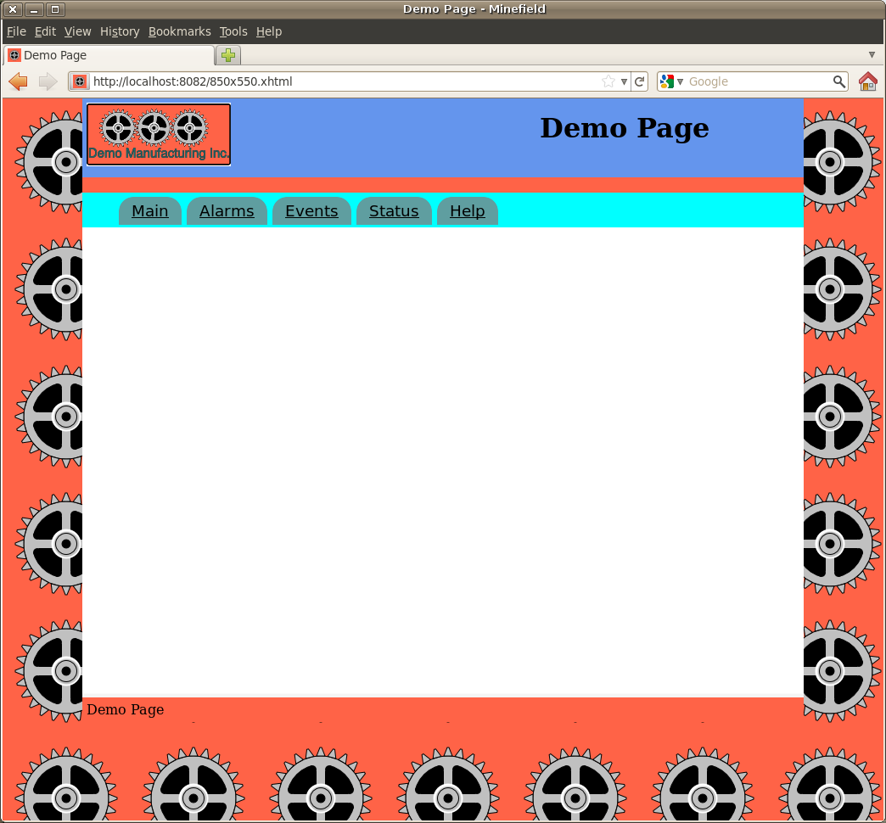
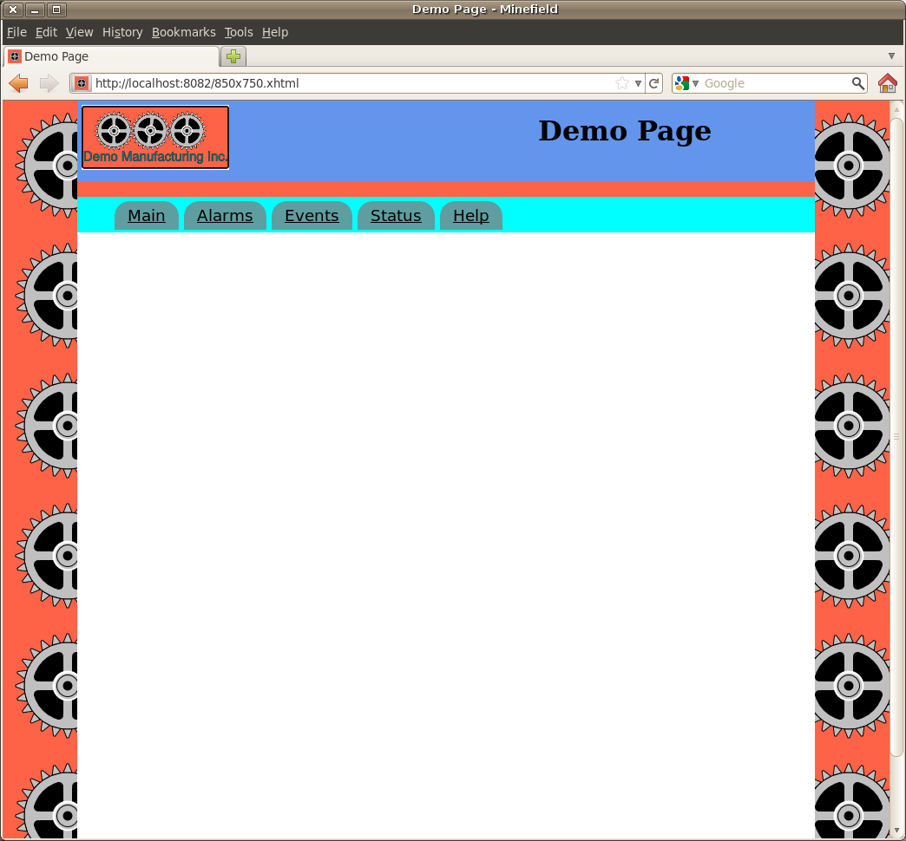
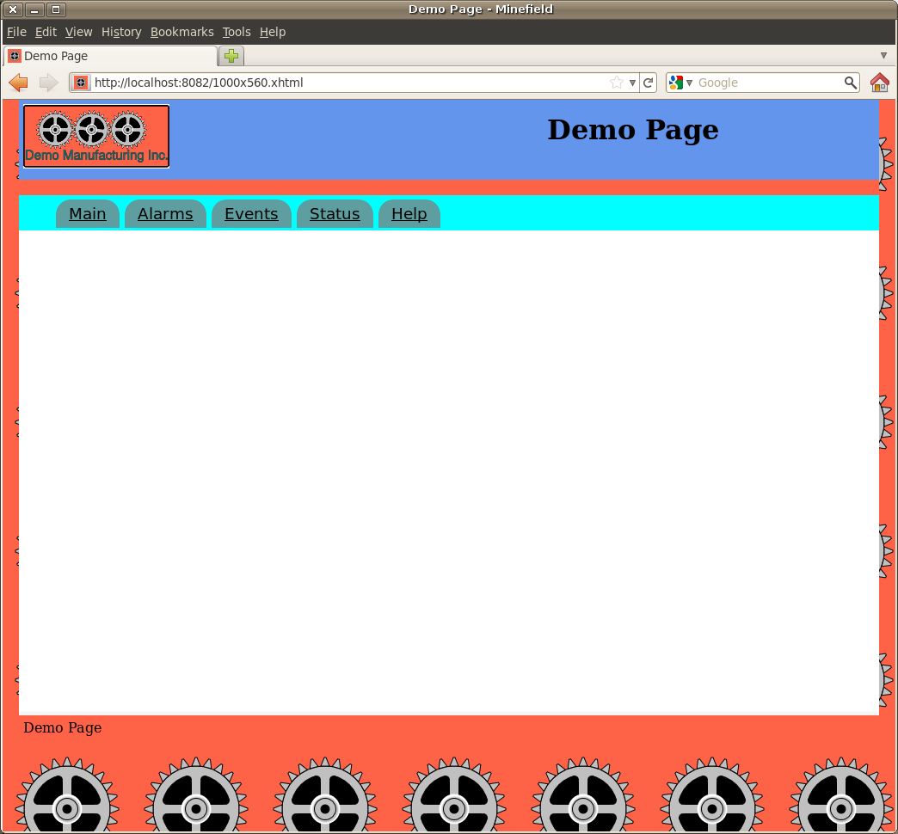
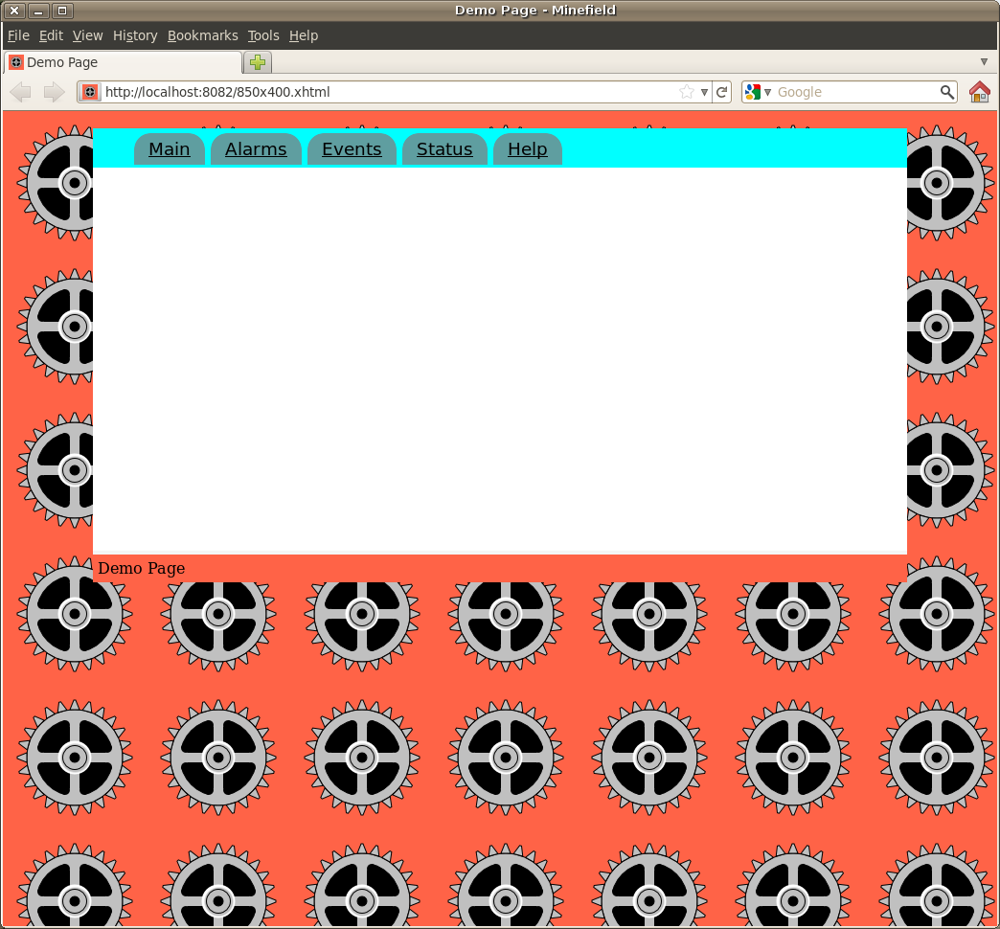
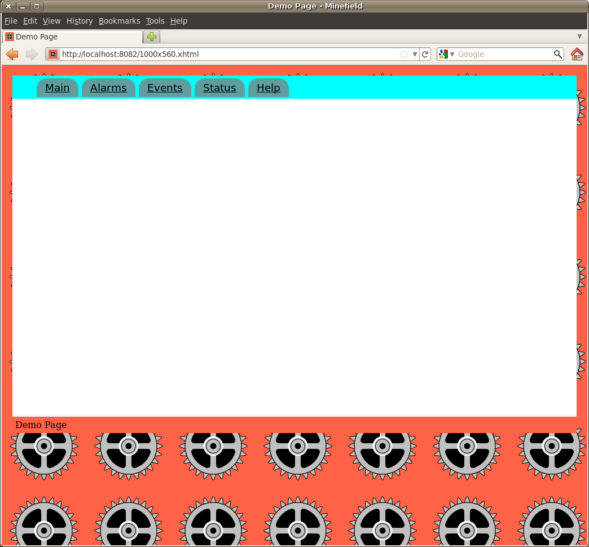

MBLogic
for an open world in automation
MBLogic
for an open world in automation
Web Page Template Files
Template Styles
XHTML Template
One web page template is provided: hmitemplate.xhtml. This provides a web page template with the following features:
- A "slot" for an SVG HMI drawing.
- Alarms.
- Events.
- HMI status and error display.
- Extensible help documentation.
- An HTML menu system to access the built-in features.
- An optional display header for descriptive titles and logos. This is controlled via the configuration file.
Template Samples
The following examples show the web template with various options, including different SVG templates and header display options.
850 x 400 SVG Template with Header

850 x 550 SVG Template with Header

850 x 750 SVG Template with Header

1000 x 560 SVG Template with Header

850 x 400 SVG Template without Header

1000 x 560 SVG Template without Header

Web Page Template Features
The web page templates are provided with a number of features.
HTML Menu
The HTML menu has links to several standard HTML screens. These are:
- Main - This is where the SVG section should be placed.
- Alarms - For alarms and alarm history.
- Events - For events.
- Status - For communications errors and status.
- Help - For application specific help.
The Javascript to animate the menu is already provided in the Javascript section of the web page. The CSS to style the menu is part of the standard page layout CSS.
Main Screen
Your application SVG will appear here. The SVG can have layers (screens) of its own, but these must be activated by push buttons in the SVG.
Alarms Screen
This provides tables for displaying active alarms and alarm history, as well as a button for acknowledging the alarms.
The alarm table has an "id" of "MBT_AlarmDisplay", and the alarm history table has an "id" of "MBT_AlarmHistoryDisplay". The alarm push button has an "id" of "MBT_AlarmPB".
The Javascript to animate the alarms is already present in the templates. The alarm state description texts are provided as standard data (see the section on standard common files). You need to provide a list of alarm message texts (see the documentation on alarms).
Events Screen
This provides a table for displaying events. The events table has an "id" of "MBT_EventDisplay".
The Javascript to animate the events is already present in the templates. You need to provide a list of event message texts (see the documentation on events).
Status Screen
This provides a table for communications errors, and another table for communications status. The communications errors table has an "id" of "MBT_ErrorDisplay" and the communications status table has an "id" of "MBT_StatusDisplay".
The Javascript to animate the errors and status is already present in the templates. The message texts are provided as standard data (see the section on standard common files).
Help Screen
This provides a place where you can put application specific user help information. Some default help text is already present, but you can add your own text (and images) as required.